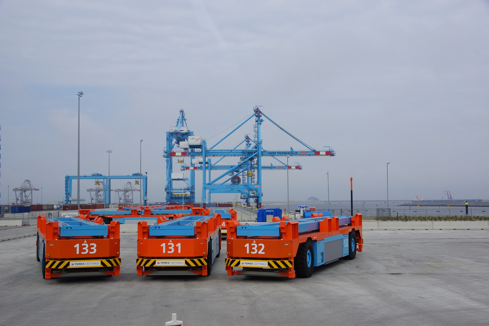

AGV’s are defined as:
“AGV/AGC/SDV are driverless, electric motor vehicles, with a programming capability of path selection, destination, collision avoidance, and destination. AGV offers advantages in the field of logistics systems by handling material flows automatically.”
AGV robots are mainly employed to move heavy components inside a warehouse.
There are many kinds of AGV robots, but the overall goal with them is to create a better approach in a means.
Credit: Google
There are many kinds of AGVs. These involve:
Automated carts - The easiest sort of AGV with minimum characteristics for lowest cost implementation.
Unit load AGVs - Only vehicles that carrier loads typically pallets, bins, carts or bundles on branches or on the AGV’s level. Roll-handling AGVs accurately handle heavy rolls of steel or paper.
Tugger AGVs – Powered parts pulling a range of non-motorized trailers that each takes a load.
Automated forklift AGVs - An present forklift vehicle whose controls have been changed to allow unmanned operation.
Working:
- Perception
- Localization
- Motion Planning & Control
- Perception
This deals with the vehicle learning to perceive its environment, like the road segmentation, humans and other vehicles near it.
Two things happen - data acquisition, data processing
Primarily three types of sensors are in use today for data acquisition.
- LIDAR - Laser-based sensor which gives a high frequency (generally 3D point cloud of the environment. It measures distances by illuminating the target with laser light and reading the reflected pulses with a sensor. Commonly used in Waymo and Uber’s Self-driving cars, they are very accurate. Alas, they are very costly to produce with current technology on a large scale.
- RADAR - TESLA uses this technology in their L2, L3 autopilot systems, and they are generally much cheaper than LIDAR sensors. They are however harder to get to work accurately.
- . Cameras - The cheapest, as well as the noisest of the lot. Incase plan to get affordable self-driving cars beside current electronic technology, it is crucial use cameras in our perception module completely due to their low cost.
- Localization
Purpose of this module is to restrict the vehicle with regard to its environment - know its condition accurately suitable to navigate to its destination.
- Motion Planning & Control
Motion planning consists of providing the vehicle a trajectory to move, taking into account the target position, and the position of the obstacles. Its goal is to ensure the path given is collision-free, and if not, it re-plans in real-time to take into account sudden changes.
Limitation in a self-driving vehicle usually deals with the problem of controlling the steering, breaks etc. provide a path to track by the motion plan algorithm, what sequence of steering rotations, acceleration should be given to following that path?
AGVs are used in a variety of areas to support processing and handling throughout a facility:
- Assembly: Moving products through production processes
- Kitting: Collecting parts for assembly
- Transportation: Loading pallets and loose parts
- Staging: Delivering pallets for production processes
- Warehousing: Leading products from extent wrappers to docks or storage
- Order picking: Moving ordered products to trailer-loading area for distribution, and transporting a platform for a picker to place selected items upon
- Just in time delivery: Pulling trailers of parts to consumption points
- Transfer loads: Transfer loads across high traffic aisles
Advantages of AGVs
- Reduced Labor Costs
- Increased Safety
- Increased Accuracy and Productivity
- Modularity
Disadvantages of AGVs
- Potentially High Initial Investment
- High maintenance Costs
- Not Suitable for Non-repetitive Tasks
- Decreased Flexibility of Operations